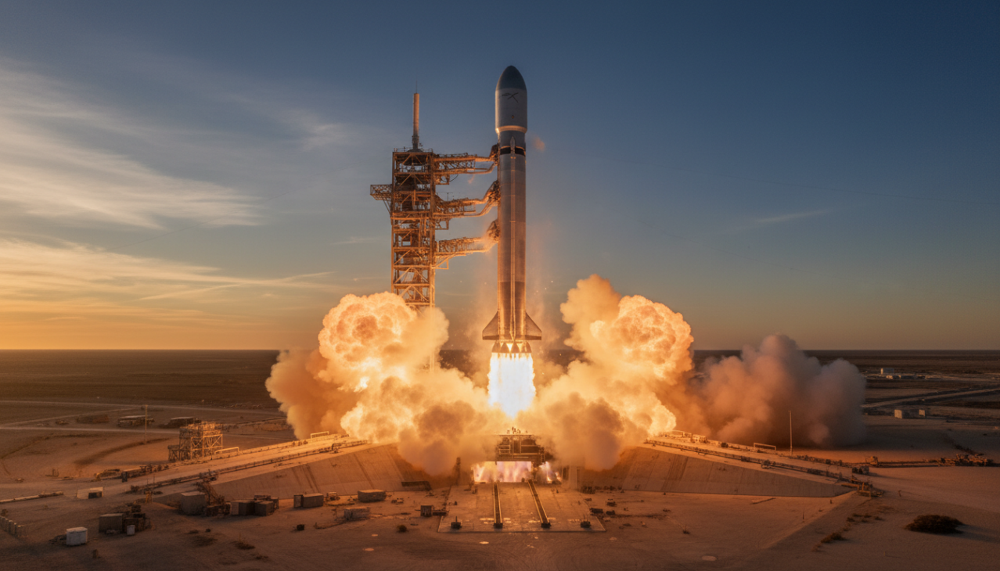
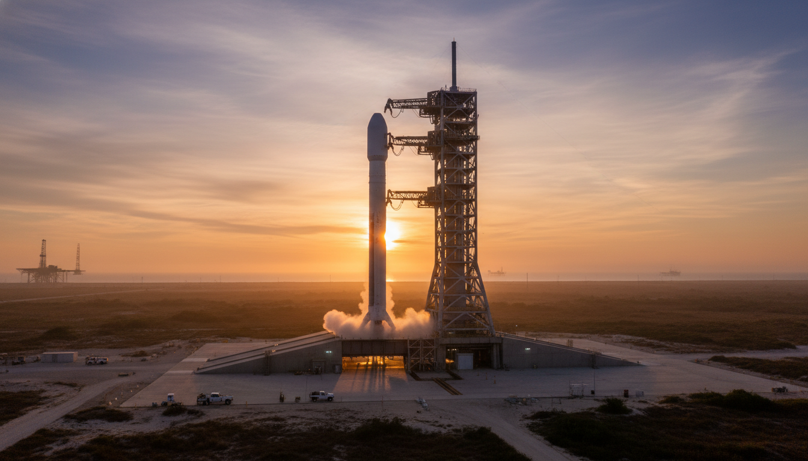
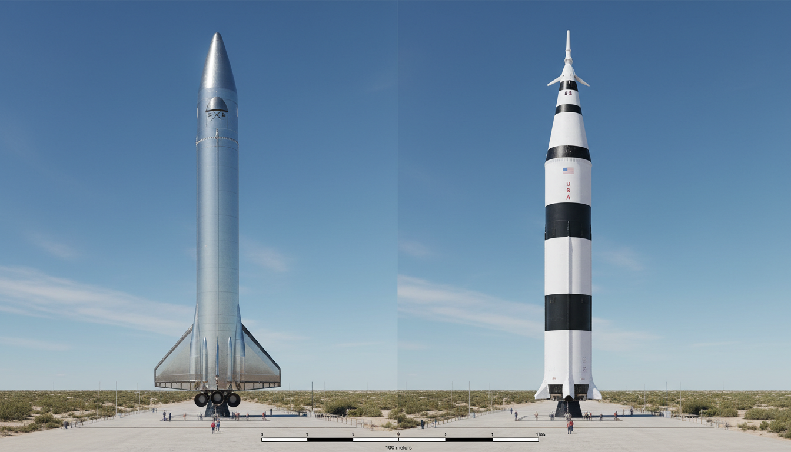

Enquanto agências espaciais europeias seguem discutindo financiamento de novos foguetes em 2027, a SpaceX acendeu 33 motores Raptor 3 num teste estático de Super Heavy. A Starship V3 chega à plataforma.

O primeiro voo está marcado para a próxima terça-feira. É o salto mais ambicioso desde o início do programa. Conforme reportou a NASASpaceflight , o static fire ocorreu em 7 de maio de 2026. A janela de lançamento abre em 12 de maio às 22h30 UTC.

33 motores Raptor 3 acesos no teste static fire da Starship em 7 de maio de 2026. O foguete é a evolução completa da arquitetura Starship original. A SpaceX trabalha nessa versão desde o final de 2024, conforme documentos da FAA.
Igualmente, é considerado o foguete mais potente já construído pelo homem. O empuxo total na decolagem ultrapassa o do Saturn V, que levou as missões Apollo em 1969. De fato, o Saturn V tinha 5 motores F-1 e empuxo combinado de cerca de 3.400 toneladas. O novo Super Heavy entrega mais que o dobro disso. Como resultado, a SpaceX inaugura a era do “foguete super-pesado” reutilizável. Outros países seguem trabalhando em arquitetura descartável tradicional. “O upper stage completou um static fire de duração total em 14 de abril, primeira vez para qualquer veículo V3”, reportou a Space.com.
A Starship é mais alta que as versões anteriores. Conforme dados públicos da SpaceX, os tanques de propelente foram alongados para acomodar maior carga de combustível. Por isso, a capacidade de elevação para órbita baixa cresce significativamente. A meta da empresa é colocar mais de 100 toneladas de carga útil em LEO.
Como resultado, a SpaceX se distancia de qualquer concorrente direto. A Blue Origin com o New Glenn ainda não passou da configuração inicial de testes orbitais. Conforme reporta o Next Big Future , o ritmo de lançamentos pode atingir um voo por semana até o final de 2026.
Diferentemente do Flight 11, no qual a empresa capturou o Super Heavy de volta na torre Mechazilla, o Flight 12 vai para splashdown deliberado. É um passo intencional de cautela.

Comparação esquemática: Starship ao lado do Saturn V do programa Apollo.
De fato, a SpaceX prioriza validar a nova arquitetura V3 antes de retomar tentativas de captura. Cada modificação do trem de pouso e dos motores Raptor 3 pede revisão. Igualmente, o teste de aceleração e desaceleração orbital com tanques alongados demanda dados próprios. O perfil de voo segue arco suborbital semelhante ao das missões 7-10. Por isso, tanto o booster quanto a aeronave de cima cairão em pontos planejados do oceano. Equipes de recuperação flutuante acompanham o trajeto.
O custo por quilo enviado em órbita cai drasticamente quando a Starship entra em operação plena. Estimativas da SpaceX falam em redução abaixo de US$ 100 por quilograma. Para efeito comparativo, o ônibus espacial cobrava cerca de US$ 50.000 por quilo em órbita baixa. A diferença é de 500x — algo nunca visto na história do setor. Como resultado, missões antes inviáveis viram rotina. Constelações de satélites, missões científicas profundas e até cargas comerciais ganham margem.
Conforme noticia o Click Petróleo e Gás sobre estações comerciais , o setor privado já se organiza para o novo cenário.
A NASA contratou a SpaceX para usar uma versão derivada da Starship como módulo lunar do programa Artemis . A primeira descida tripulada está prevista para 2027. De acordo com a documentação técnica , a versão lunar precisa de reabastecimento orbital antes da partida para a Lua. Por isso, demonstrar reabastecimento espacial é um dos objetivos da configuração V3. O Flight 12 ainda não inclui essa demonstração — fica para missões posteriores. Igualmente, a SpaceX mantém a meta de pousos não tripulados em Marte na janela de transferência de 2028. Nesse cenário, a versão V3 seria o veículo padrão.
Conceito artístico da Starship em missões para a Lua e Marte nas próximas janelas de lançamento.
O cronograma original previa o Flight 12 ainda em março. A janela foi adiada após problemas em testes preliminares de pressurização e de software de bordo. Conforme reportou a Applying AI , o atraso impactou também planos de IPO da SpaceX. Investidores acompanham o ritmo de lançamentos. De fato, a Bolsa de Valores de Nova York mantém especulações sobre quando a SpaceX poderá abrir capital. Cada teste bem-sucedido aumenta a avaliação privada da empresa. Apesar disso, a SpaceX prefere não comentar planos financeiros publicamente. O foco da empresa segue sendo a engenharia. Por outro lado, fornecedores brasileiros de aço especial e ligas resistentes a alta temperatura monitoram a evolução do programa Starship.
De fato, peças usadas em motores de foguete demandam metalurgia avançada. Empresas nacionais com capacidade industrial relevante se posicionam para parcerias. Igualmente, instituições de ensino e pesquisa brasileiras seguem o desenvolvimento da tecnologia de propulsão como referência educacional.
Fonte